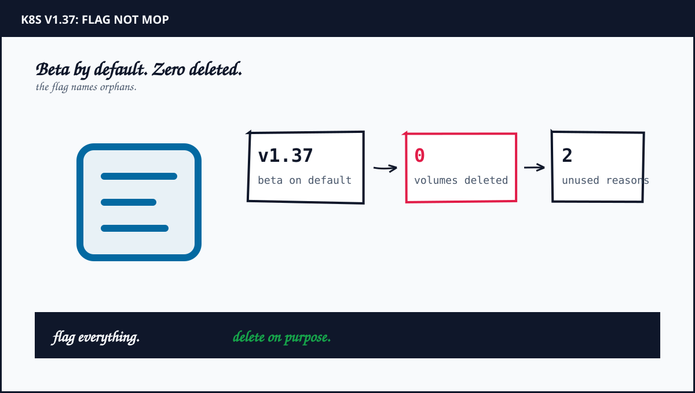
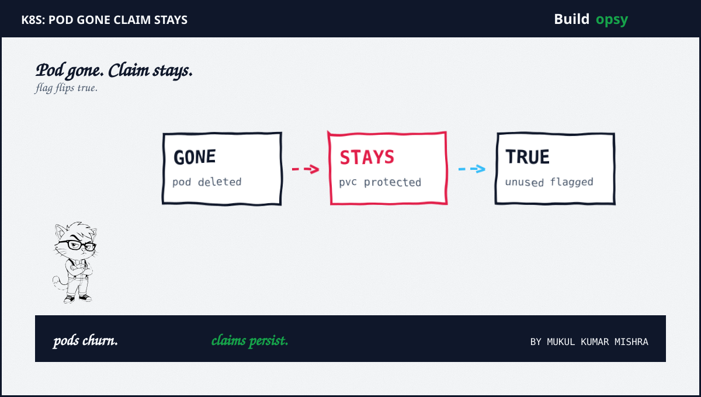

1. What v1.37 actually shipped
The feature gate is PersistentVolumeClaimUnusedSinceTime. Kubernetes v1.36 carried it as Alpha behind an explicit opt-in. v1.37 promotes it to Beta with the gate enabled by default plus full end-to-end test coverage. The author is Roman Bednar at Red Hat. The date is Sep 21 2026. None of this was secret. It shipped in a public blog with a walkthrough.
The mechanism reuses the PVC protection controller. That controller already watches pods to enforce storage object in use protection through finalizers. It now manages one more piece of status on every claim. The Unused condition reads True with reason NoPodsUsingPVC when no non-terminal pod references the PVC. It reads False with reason PodUsingPVC when at least one running or pending pod references it. Terminated pods in Succeeded or Failed phase do not keep the claim marked in use.
Usage is one kubectl read. Fetch the claim conditions as JSON plus look for type Unused. Fresh claims with no pods show True plus a message that no pods currently reference the PVC. Bind a pod plus the condition flips to False. Delete the pod plus it flips back. The flag answers which claims are orphaned. It schedules nothing. It deletes nothing.
2. Timeline from Alpha to Beta
- Dec 2021, v1.23: StatefulSet PVC auto deletion arrives as Alpha with a retention policy plus two triggers, whenDeleted plus whenScaled.
- v1.27: StatefulSet retention graduates to Beta after operator validation.
- v1.32: StatefulSet retention reaches general availability. Validated on EKS with AWS plus Salesforce during Beta.
- v1.36: PVC last-used tracking arrives as Alpha behind an explicit feature gate.
- Sep 2026, v1.37: Last-used tracking graduates to Beta, enabled by default.
Two tracks matter. The deletion track is five years old plus battle tested plus opt-in per StatefulSet. The visibility track is new plus cluster wide plus on by default. Social posts merged them into one secret auto cleaner. The history shows two deliberate designs with opposite defaults. Deletion stays conservative. Visibility ships broadly.
The conservatism is load bearing. Kubernetes refuses to delete PVCs when pods disappear because the claim may hold the only copy of critical data. StatefulSet replicas churn constantly. Tying storage lifetime to pod lifetime by default would trade occasional orphan bills for occasional data loss. The project chose the bill. Every release since has kept that choice while adding sharper tools to manage it.

3. Why orphans accumulate
Developers delete pods. Controllers reschedule. Namespaces get torn down in the wrong order. Each path leaves claims behind because no controller owns the reverse mapping from dead workload to live storage. Before v1.37 answering which PVC is safe to remove meant joining pod specs against claim names with custom scripts plus audit logs plus hope. Most teams never built the join. The orphans compounded quietly.
Retention policy covers one shape. A StatefulSet with whenDeleted Delete plus whenScaled Delete removes template claims on both triggers. Retain on either keeps them for reattachment. Anything outside StatefulSets gets nothing. Deployments with direct claims plus deleted namespaces plus migrated workloads all fall through. The AWS validation post states the gap plainly. Preexisting orphans plus post-hoc Retain decisions stay manual.
Reclaim policy sits underneath. Delete on the StorageClass removes the PV plus the backing EBS volume when the claim goes. Retain keeps both as orphans regardless of retention settings. A correct retention policy on top of Retain reclaim still bills. The full chain needs all three layers aligned. Flag plus retention plus reclaim. Miss one plus the meter runs.
4. The bill hides in the boundary
Assumptions are explicit. Orphaned block volumes bill at provisioned size whether or not any pod mounts them. Public gp3 pricing sits near eight cents per GB month. A mid-size fleet carrying two hundred orphaned one hundred GiB claims holds about twenty TiB of dead storage. That models near sixteen hundred dollars per month before snapshots plus IOPS extras. Numbers below size the cleanup, not any invoice.
Model the fix in three parts. Read the flag on a schedule plus export Unused True claims older than your safety window into a review queue. That is one CronJob plus a Prometheus metric plus a dashboard nobody had before. Set retention policy per workload criticality. Ephemeral review apps get Delete on both triggers. Stateful systems keep Retain with documented reattach runbooks. Align reclaim to Delete wherever backups live elsewhere. Audit StorageClasses for Retain defaults inherited years ago.
Estimate the order of cost. The exporter is an afternoon of controller work plus ongoing review minutes per week. Retention changes are YAML edits with staged rollout plus backup verification. Reclaim audits are one pass per StorageClass. Compare that against dead EBS compounding monthly plus snapshot sprawl on top plus the eventual heroic cleanup with production adjacent deletes. Visibility was the missing input. v1.37 supplies it free. The expensive part was always deciding, not detecting.
For the stateful failover pattern that creates these orphans at scale, see my Coinbase MSK teardown plus for controller level reasoning see my Kubernetes course. Different layers. Same missing guard. Lifecycle needs flag plus policy plus proof.
5. The verdict: flag everything, delete on purpose
Kubernetes disclosed properly with dates plus semantics plus a walkthrough. The social layer garbled it into secret auto cleanup within days. That gap is the whole lesson. Read the changelog before the thread. The flag names orphans. Your policy deletes them. Your reclaim setting decides whether deletion saves money.
For an infrastructure review, ask for the v1.37 Unused condition export plus the per workload retention matrix plus the StorageClass reclaim audit plus the safety window before auto deletion fires. Test each control in a staging namespace with real claims. Do not assume Delete reclaim everywhere. The bill hides in the boundary between flagged storage plus retained policy.
Until automation reads the flag under approval, the safest posture is the one the project chose. Observe everything. Delete deliberately.
Frequently Asked Questions
Does Kubernetes v1.37 automatically delete unused PVCs?
No. v1.37 adds an Unused condition that flags PVCs no running pod references. Deletion still follows StatefulSet retention policy plus reclaim policy plus manual cleanup.
How does the PVC Unused condition work?
The PVC protection controller sets Unused True with reason NoPodsUsingPVC when no non-terminal pod references the claim, plus Unused False with reason PodUsingPVC otherwise. Terminated pods do not count.
What actually deletes StatefulSet PVCs?
The persistentVolumeClaimRetentionPolicy with whenDeleted plus whenScaled set to Retain or Delete, generally available since v1.32, plus the StorageClass reclaim policy for the backing volume.
Sources and Method
Flag semantics plus graduation plus walkthrough follow the Kubernetes v1.37 blog Sep 21 2026. Retention history follows KEP-1847 plus the v1.23 alpha announcement. EKS validation plus orphan gap follow the AWS Storage Blog May 2025. Cost math is modeled from public gp3 list pricing with stated assumptions. For failover orphans see my Coinbase MSK teardown.